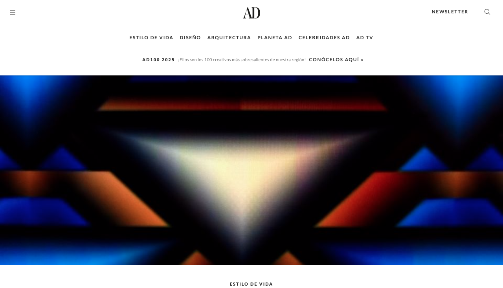
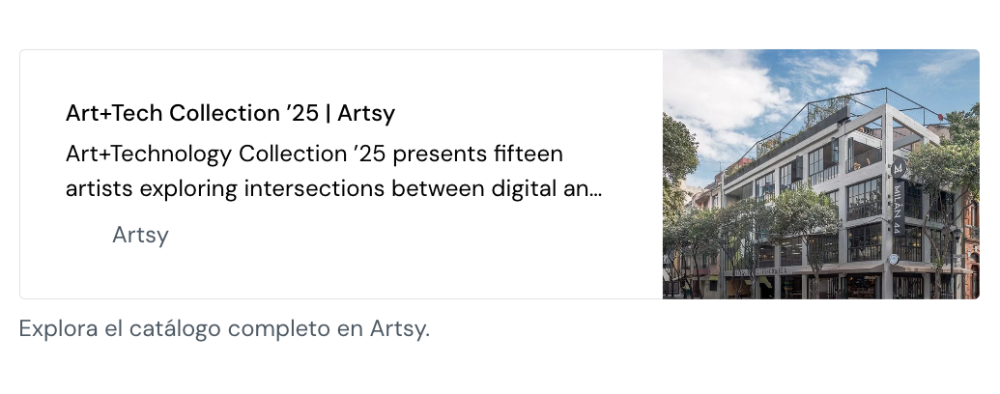

News

Avant.Dev: una visión propositiva y multidisciplinar de la curaduría
5 de noviembre de 2024
Un proyecto que acciona desde la intersección entre el arte, tecnología y otras disciplinas en la Ciudad de México. Por Cristina Cruz.

Semana del Arte CDMX
February 2025
Visita Arte+Tecnología Colección '25 | 4-9 febrero en Milán 44 Shows 15 artistas mexicanos fusionan arte contemporáneo y nuevos medios en una exposición que celebra la diversidad creativa, desde instalaciones audiovisuales hasta arte digital.

Suerte de Novato
13.05.21 - 27.05.21
El Laboratorio de Arte Contemporáneo ‘Suerte de Novato‘ es una iniciativa conjunta de Radio Ensayo y el Despacho de Servicios Curatoriales, con el apoyo de Save the Artist e Iván Navarrete, para fomentar la producción sonora entre artistas visuales y de otras disciplinas.